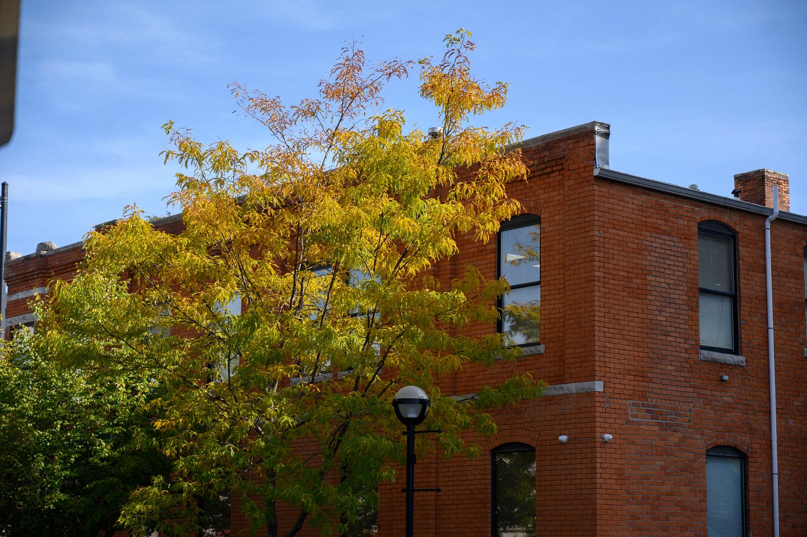

About
Michigan's Maize and Blue Cupboard food pantry is UofM organization that works to alleviate food insecurity on campus. It serves as a resource for food but also provides other basic living needs like toilet paper and cleaning supplies. Shopping at Maize and Blue Cupboard requires an appointment which can be made from our website.

What Maize and Blue Cupboard provides
- Food
- Kitchen and Cooking
- Personal and Household Help
- General Support

Federal Assistance for Food Insecurity
If you or somebody you know is struggling with food insecurity, you may want to apply for SNAP benefits. SNAP is a program that provides assistance for college students who do not have stable access to food. For more information, check out SNAP's website.
Location
Maize and Blue Cupboard is located in the basement of Betsy Barbour and is open during the hours listed here.
Maise and Blue Cupboard hours
Sunday: 2pm-6pm
Monday-Thursday: 3pm-7pm
Friday: 12pm-7pm
Saturday: Closed